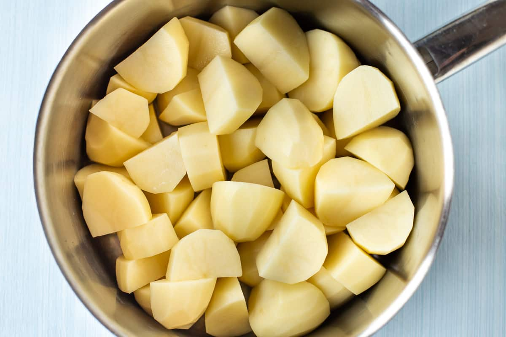

Ingredients:
- 2 pounds (about 900g) of potatoes (russet or Yukon Gold)
- ½ cup (120ml) of milk
- ¼ cup (60g) of unsalted butter
- Salt, to taste
- Black pepper, freshly ground, to taste
- Optional: ¼ cup (60ml) of heavy cream for extra creaminess
Method:
-
Prepare the Potatoes:
- Peel the potatoes and cut them into evenly sized chunks.
- Rinse the potato chunks under cold water to remove excess starch.
-
Boil the Potatoes:
- Place the potato chunks in a large pot and cover them with cold water.
- Add a generous pinch of salt to the water.
- Bring the water to a boil over high heat, then reduce the heat to medium-low and simmer until the potatoes are fork-tender, about 15-20 minutes.
-
Heat the Milk and Butter:
- While the potatoes are cooking, heat the milk and butter in a small saucepan over low heat until the butter is melted and the mixture is warm. Do not boil.
-
Drain and Mash the Potatoes:
- Once the potatoes are cooked, drain them well and return them to the pot.
- Mash the potatoes using a potato masher or a ricer until they reach your desired consistency. Some prefer smooth mashed potatoes, while others like them a bit chunky.
-
Add the Milk and Butter Mixture:
- Gradually pour the warm milk and butter mixture into the mashed potatoes, stirring gently to incorporate. Add more milk if needed to achieve the desired creaminess.
- If using heavy cream, add it at this stage for extra richness.
-
Season and Serve:
- Season the mashed potatoes with salt and freshly ground black pepper to taste. Adjust seasoning as needed.
- Serve the creamy mashed potatoes hot, garnished with a knob of butter or chopped fresh herbs if desired.
